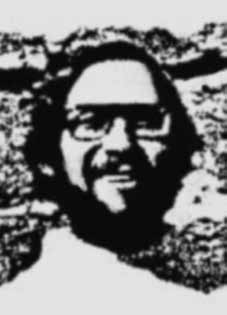

Nelson
de Souza
Kohl
CIRCUNSTÂNCIAS DA MORTE
Nelson de Souza Kohl foi levado da casa em que o casal morava com amigos, no bairro de La Cisterna em Santiago do Chile, por efetivos da Força Aérea chilena, no dia 15 de setembro de 1973, por volta das 11h. Sua esposa, Elaine Beraldo, e a amiga Sandra Macedo de Melo Castro, com seus dois filhos menores, estavam na casa e presenciaram a detenção.
Os soldados, em número de várias dezenas, cercaram a casa, entraram pela porta e janelas, revistaram todos os cômodos. Perguntavam pelo dono da casa (que não se encontrava no momento), sem mencionar nome algum – aparentemente, os moradores teriam sido denunciados apenas por serem brasileiros.
Embarcaram Nelson em um caminhão militar, dizendo que o levavam para averiguações. Elaine, Sandra e as crianças refugiaram-se na Embaixada da Argentina no dia seguinte e lá permaneceram cerca de dois meses até conseguirem deixar o país para a Argentina. Nada mais souberam de Nelson, que não foi localizado apesar das denúncias apresentadas às Nações Unidas e à Cruz Vermelha e das buscas realizadas por aqueles e outros organismos de direitos humanos e amigos pessoais, desde os primeiros dias após o desaparecimento e ao longo de muitos anos.
A mãe adotiva de Nelson escreveu ao General Pinochet pedindo informação sobre o que acontecera a seu filho; Elaine chegou a recorrer à Embaixada alemã na Argentina, já que Nelson era descendente de alemães, sem resultado; em 1980 a família de Nelson dirigiu apelo ao chanceler Saraiva Guerreiro para que, na visita que realizaria ao Chile em junho daquele ano, procurasse obter informação sobre seu paradeiro. No entanto, apenas em 1993, quando os deputados Nimário Miranda e Alfredo Valadão foram a Santiago em missão da Comissão Externa para Desaparecidos Políticos da Câmara dos Deputados, foi localizado o atestado de óbito de Nelson, e a família recebeu a informação oficial de sua morte e, em seguida, a de que teria sido sepultado no Cemitério Geral de Santiago e posteriormente cremado.
De acordo com os registros do Serviço Médico-Legal de Santiago, Nelson teria sido encontrado na via pública (não é especificado o nome da rua), morto em consequência de feridas de bala toráxico-abdominais no dia 16 de setembro, às 9:45h. O laudo de autópsia foi assinado pelo médico Alfredo Vargas, diretor do Instituto Médico Legal de Santiago, o mesmo que atestou a morte de dezenas de pessoas após o golpe de Estado de 1973.
Informações contraditórias do Cemitério Geral de Santiago dão conta que Nelson teria sido cremado em 17/10/73 ou em 4/1/74, e que suas cinzas teriam sido depositadas no cinerário comum ou esparcidas no jardim do crematório. O deputado Nilmário Miranda formalizou a denúncia do desaparecimento de Nelson ante a “Corporación Nacional de Reparación y Reconciliación” do Chile (que deu seguimento aos trabalhos da Comissão Rettig), a qual declarou expressamente haver convicção de que Nelson de Souza Kohl foi detido por agentes do Estado chileno e executado à margem da lei enquanto era mantido privado de liberdade, e concedeu reparação econômica à sua família.
Em junho de 2011 foi instaurado perante a Corte de Apelações de Santiago (e posteriormente redistribuído à de San Miguel, com jurisdição sobre o local dos fatos) por iniciativa do Ministério Público chileno, ao qual se associaram a “Agrupación de Formatado: Português (Brasil) Formatado: Português (Brasil) Familiares de Ejecutados Políticos” e o Ministério do Interior (Programa Continuación de la Ley no 19.123), o processo criminal Rol no 104-2011 – VE, para investigar e apurar responsabilidades no sequestro e homicídio de Nelson de Souza Kohl.
A CNV teve acesso aos autos judiciais e transmitiu cópia ao Ministério Público Federal, para facilitar o acompanhamento, interlocução e assessoramento cabível aos responsáveis pelo processo naquele país.
Nelson de Souza Kohl was taken from the house where the couple lived with friends, in the La Cisterna neighborhood in Santiago de Chile, by members of the Chilean Air Force, on September 15, 1973, at around 11 am. His wife, Elaine Beraldo, and her friend Sandra Macedo de Melo Castro, with their two minor children, were in the house and witnessed the arrest.
The soldiers, numbering several dozen, surrounded the house, entered through the door and windows, and searched every room. They asked for the owner of the house (who was not there at the time), without mentioning any name – apparently, the residents had been reported just because they were Brazilian.
They loaded Nelson into a military truck, saying they were taking him for investigation. Elaine, Sandra and the children took refuge in the Argentine Embassy the next day and stayed there for around two months until they were able to leave the country for Argentina. They heard nothing more about Nelson, who was not located despite complaints filed with the United Nations and the Red Cross and searches carried out by those and other human rights organizations and personal friends, from the first days after his disappearance and over many years.
Nelson's adoptive mother wrote to General Pinochet asking for information about what had happened to her son; Elaine even appealed to the German Embassy in Argentina, as Nelson was of German descent, to no avail; In 1980, Nelson's family appealed to Chancellor Saraiva Guerreiro so that, during his visit to Chile in June of that year, he could seek information about his whereabouts. However, it was only in 1993, when deputies Nimário Miranda and Alfredo Valadão went to Santiago on a mission from the External Commission for Political Disappearances of the Chamber of Deputies, that Nelson's death certificate was located, and the family received official information of his death and, subsequently, that he had been buried in the Santiago General Cemetery and subsequently cremated.
According to records from the Santiago Medical-Legal Service, Nelson was found on a public street (the name of the street is not specified), dead as a result of chest-abdominal gunshot wounds on September 16, at 9:45 am. The autopsy report was signed by doctor Alfredo Vargas, director of the Legal Medical Institute of Santiago, the same person who attested to the deaths of dozens of people after the 1973 coup d'état.
Contradictory information from the Santiago General Cemetery states that Nelson would have been cremated on 10/17/73 or on 1/4/74, and that his ashes would have been deposited in the common cinerary or scattered in the crematorium garden. Representative Nilmário Miranda formalized the report of Nelson's disappearance before the Chilean “Corporación Nacional de Reparación y Reconciliación” (which continued the work of the Rettig Commission), which expressly declared that it was convinced that Nelson de Souza Kohl was detained by agents of the Chilean State and executed outside the law while he was kept deprived of liberty, and granted economic compensation to his family.
In June 2011, it was instituted before the Court of Appeals of Santiago (and later redistributed to the Court of San Miguel, with jurisdiction over the location of the events) on the initiative of the Chilean Public Ministry, which was joined by the “Agrupación de Formatado: Português (Brasil) Formatado: Português (Brasil) Familiares de Ejecutados Políticos” and the Ministry of the Interior (Programa Continuación de la Ley no 19.123), criminal case Rol no. 104-2011 – VE, to investigate and determine responsibilities in the kidnapping and murder of Nelson de Souza Kohl.
The CNV had access to the court records and sent a copy to the Federal Public Ministry, to facilitate monitoring, dialogue and appropriate advice to those responsible for the process in that country.
Nelson de Souza Kohl fue sacado de la casa donde vivía el matrimonio con amigos, en el barrio La Cisterna de Santiago de Chile, por miembros de la Fuerza Aérea de Chile, el 15 de septiembre de 1973, alrededor de las 11 de la mañana. En la casa se encontraban su esposa, Elaine Beraldo, y su amiga Sandra Macedo de Melo Castro, con sus dos hijos menores de edad, y presenciaron la detención.
Los soldados, varias docenas, rodearon la casa, entraron por la puerta y las ventanas y registraron todas las habitaciones. Preguntaron por el dueño de la casa (que no estaba en ese momento), sin mencionar ningún nombre; al parecer, los residentes habían sido denunciados solo por ser brasileños.
Subieron a Nelson a un camión militar y dijeron que lo llevaban para investigarlo. Elaine, Sandra y los niños se refugiaron en la Embajada Argentina al día siguiente y permanecieron allí alrededor de dos meses hasta que pudieron salir del país hacia Argentina. No supieron más de Nelson, quien no fue localizado a pesar de las denuncias presentadas ante las Naciones Unidas y la Cruz Roja y las búsquedas realizadas por esas y otras organizaciones de derechos humanos y amigos personales, desde los primeros días después de su desaparición y durante muchos años.
La madre adoptiva de Nelson escribió al general Pinochet pidiéndole información sobre lo que le había sucedido a su hijo; Elaine incluso apeló en vano a la embajada alemana en Argentina, ya que Nelson era de ascendencia alemana; En 1980, la familia de Nelson apeló al canciller Saraiva Guerreiro para que, durante su visita a Chile en junio de ese año, pudiera buscar información sobre su paradero. Sin embargo, fue recién en 1993, cuando los diputados Nimário Miranda y Alfredo Valadão viajaron a Santiago en misión de la Comisión Externa de Desapariciones Políticas de la Cámara de Diputados, que se localizó el certificado de defunción de Nelson, y la familia recibió información oficial de su muerte y, posteriormente, que había sido enterrado en el Cementerio General de Santiago y posteriormente incinerado.
Según registros del Servicio Médico Legal de Santiago, Nelson fue encontrado en la vía pública (no se especifica el nombre de la calle), muerto producto de impactos de bala en el pecho-abdominal el 16 de septiembre, a las 9:45 horas. El informe de la autopsia fue firmado por el médico Alfredo Vargas, director del Instituto Médico Legal de Santiago, el mismo que dio fe de la muerte de decenas de personas tras el golpe de Estado de 1973.
Información contradictoria del Cementerio General de Santiago señala que Nelson habría sido cremado el 17/10/73 o el 4/1/74, y que sus cenizas habrían sido depositadas en el cinerario común o esparcidas en el jardín del crematorio. El diputado Nilmário Miranda formalizó la denuncia de la desaparición de Nelson ante la Corporación Nacional de Reparación y Reconciliación de Chile (que continuó los trabajos de la Comisión Rettig), la cual declaró expresamente estar convencida de que Nelson de Souza Kohl fue detenido por agentes del Estado chileno y ejecutado al margen de la ley mientras se encontraba privado de libertad, y otorgó una compensación económica a su familia.
En junio de 2011, fue interpuesto ante la Corte de Apelaciones de Santiago (y luego redistribuido a la Corte de San Miguel, con competencia sobre el lugar de los hechos) por iniciativa del Ministerio Público de Chile, al que se sumaron la “Agrupación de Formatado: Português (Brasil) Formatado: Português (Brasil) Familiares de Ejecutados Políticos” y el Ministerio del Interior (Programa Continuación de la Ley no 19.123), causa penal Rol núm. 104-2011 – VE, para investigar y determinar responsabilidades en el secuestro y asesinato de Nelson de Souza Kohl.
La CNV tuvo acceso a los expedientes judiciales y envió copia al Ministerio Público Federal, para facilitar el seguimiento, diálogo y asesoría adecuada a los responsables del proceso en ese país.